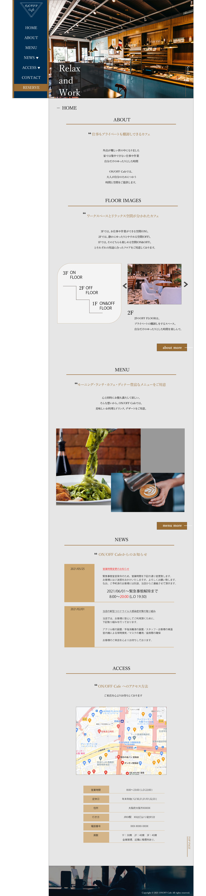

<!DOCTYPE html>
<html lang="ja">

<head>
  <meta charset="UTF-8">
  <meta name="viewport" content="width=device-width, initial-scale=1.0">
  <title>Works-website01 |長谷実香 ポートフォリオサイト</title>
  <link rel="stylesheet" href="css/style.css" />
  <!-- フォント読み込み -->
  <link href="https://fonts.googleapis.com/css2?family=Shippori+Mincho:wght@500&display=swap" rel="stylesheet">
  <link href="https://fonts.googleapis.com/css2?family=Stalemate&display=swap" rel="stylesheet">
  <link href="https://fonts.googleapis.com/css2?family=Noto+Serif+JP:wght@200;400&display=swap" rel="stylesheet">
  <link href="https://fonts.googleapis.com/css2?family=Ephesis&family=Italianno&display=swap" rel="stylesheet">
  <!-- chrome transitionバグ対応 -->
  <script>console.log("")</script>
</head>

<body id="works-webPage">

  <!-- wrapper -->
  <div class="wrapper">
    <!-- header -->
    <header class="header">
      <div class="h1-wrap">
        <h1><a href="index.html"> MIKA's PORTFOLIO</a></h1>
      </div>
      <!-- nav -->
      <nav class="nav">
        <ul>
          <li><a href="index.html#works">works</a></li>
          <li><a href="index.html#about">about</a></li>
          <li><a href="index.html#contact">contact</a></li>
        </ul>
      </nav>
    </header>

    <!-- container -->
    <div class="container">
      <main>
        <article>
          <div class="worksPage">

            <h1>ON/OFFCafe</h1>
            <p>大人が自分のために使う空間を提供するカフェ(架空サイト)</p>
            <div class="url">
              <a href="#">http://mika-test.ml</a>
            </div>
            <div class="worksPage-inner">
              <div class="worksPage-mocupImg">
                
              </div>
              <dl>
                <dt>概要</dt>
                <dd>新規でオープンするコンセプトカフェの架空webサイト<br>
                  <span class="outline-margin">
                    【ON/OFFカフェとは】<br>
                    コロナ禍の影響で、多様な働き方が可能となり、在宅やカフェで作業をする人が多くなった。
                    また、反対に外出する機会が減ることで家で窮屈な生活を余儀なくされている人もいる。
                    そこで、ON/OFFCafeでは、仕事とプライベートどちらも整理..”棚卸し”できる空間を提供する。<br>
                    3階は、ONの作業スペースで未就学児お断り、私語厳禁という条件の元時間制でスペースを提供。<br>
                    2階は、OFFのプライベートスペースでゆったりと自分だけの時間が過ごすことができる。<br>
                    1階は、ON/OFFどちらも利用できるカフェスペースとなっている。<br>
                  </span>
                </dd>
                <dt>制作の目的</dt>
                <dd>新規でオープンするカフェの集客およびサービス内容の周知のためのサイト</dd>
                <dt>ターゲット</dt>
                <dd>20代以上の男女<br>
                  ONターゲット...外で仕事や作業をしたい人 <br>
                  OFFターゲット...日々のストレスから解放されて自分の時間をゆっくり持ちたい人
                </dd>
                <dt>制作<br class="br-sp">ポイント</dt>
                <dd>あああああああああああああああああああああああああああああああああ</dd>
                <dt>担当範囲</dt>
                <dd>企画・デザイン・コーディング・本番移送</dd>
                <dt>制作期間</dt>
                <dd>1ヶ月</dd>
                <dt>使用ツール</dt>
                <dd>Photoshop/Illustrator/Vscode</dd>
                <dt>使用言語</dt>
                <dd>HTML5/CSS3/jQuery(JavaScript)</dd>
                <dt>URL</dt>
                <dd></dd>
              </dl>
              <div class="comp-wrapper">
                <p>以下、デザインカンプ</p>
                
              </div>
            </div>
          </div>
        </article>
      </main>
    </div>
    <!-- footer -->
    <footer id="footer" class="footer">
      <div id="page-top"><a href="#">Page Top</a></div>
      <p>©Mika Hase</p>
      <div class="footer-img">
        
      </div>

    </footer>
  </div>

  <!-- script -->
  <script src="https://code.jquery.com/jquery-3.6.0.min.js"
    integrity="sha256-/xUj+3OJU5yExlq6GSYGSHk7tPXikynS7ogEvDej/m4=" crossorigin="anonymous"></script>
  <script src="js/script.js"></script>
</body>

</html>